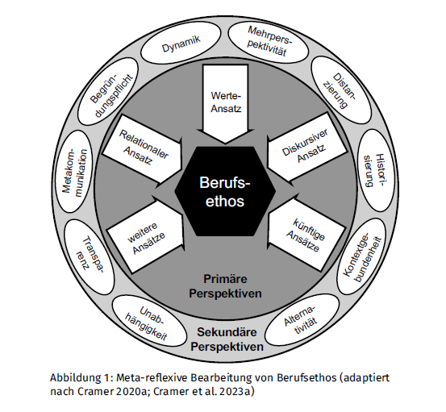

Ankunft
Das Ziel ist auch ein Anfang
Wer dieses Feld erreicht, hat eine Lernbiografie durchgespielt – mit allen Leitern, Rutschen und Momenten des Innehaltens. Das Zielfeld ist kein Abschluss, sondern ein Ankommen im Jetzt: Wer bin ich heute als Lehrperson, und was nehme ich mit?
Und wer möchte, darf die eigene Vision hier gleich teilen. 😉
Hier noch ein Bild zur Inspiration, wie man sich den Berufsethos als Lehrperson grafisch vorstellen kann:
